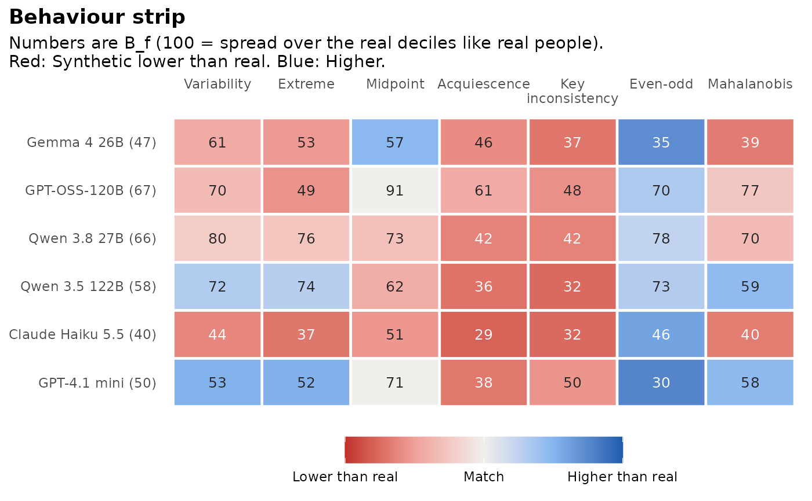

Behaviour: Do synthetic respondents answer the way real people do?
Source:R/behaviour.R
synthetic_behaviour.RdExperimental. synthetic_behaviour() compares how synthetic and real
respondents answer, using the eight behaviour_features(). For each
feature, the real values are cut at their deciles and the share of
synthetic respondents in each decile is counted, as Overlap does for
score deciles in synthetic_coverage(). Then
Usage
synthetic_behaviour(
synthetic,
real,
items,
fit_scales = NULL,
clean_real = FALSE,
careless_rule = NULL,
seed = 1
)Arguments
- synthetic
a named list with one element per model, each a list of attempts (data frames of responses), as in
synthetic_coverage().- real
a data frame of real responses to the same items.
- items
a data frame with one row per item:
item(column name),scale(ortrait, as in hexaco_items), an optionalfacetand an optional logicalreverse.- fit_scales
the scales used for person fit.
NULLuses all scales;character(0)skips person fit (theperson_fitcolumn is thenNA).- clean_real
compare against real respondents after removing those flagged by
flag_careless()? The default compares against all real respondents.- careless_rule
optional
rulepassed toflag_careless().- seed
random seed for breaking ties.
Value
An object of class sc_behaviour: A list with summary (one row
per model: Overall, Lowest and Highest Behaviour over the attempts and
the person fit tails), attempts (Behaviour and person fit tails per
attempt), features (\(B_f\), the medians and the direction per
model, attempt and feature), real_features (the features of the real
respondents), careless (the flags, with clean_real = TRUE) and
settings. It has print(), tidy() and autoplot() methods.
Details
$$B_f = 100 \sum_d \min(p_{f,d}, 0.10), \qquad \mathrm{Behaviour} = \mathrm{mean}_f(B_f).$$
\(B_f\) is 100 when synthetic respondents spread over the real deciles
of feature \(f\) like real people do, and 10 when they all fall in one
decile. Ties at the cut points (common for extreme and midpoint) are
broken at random with seed. Features that cannot be computed (for
example midpoint with an even number of categories) are left out of the
mean.
Each \(B_f\) has a direction: Whether the synthetic median is
"lower" or "higher" than the real median. That tells "too tidy" from
"too noisy". The person fit tails give the share of synthetic respondents
below the real 5th percentile of \(l_z\) (careless-like) and above the
real 95th percentile (too coherent); real data have 5% in each by
construction.
Synthetic respondents are experimental: Use Behaviour to compare models, not to replace a field test.
Examples
h <- hexaco_items[hexaco_items$trait == "H", ]
real <- hexaco_real[hexaco_real$country == "Canada", ]
ca <- hexaco_llm[hexaco_llm$country == "Canada" & hexaco_llm$attempt <= 2, ]
syn <- lapply(split(ca, ca$model, drop = TRUE), function(m) split(m, m$attempt))
beh <- synthetic_behaviour(syn, real, h, fit_scales = character(0))
beh
#> Behaviour of synthetic respondents (experimental)
#> 40 items, 1708 real respondents; person fit on no scales.
#>
#> model attempts Behaviour Lowest Highest lz < P5 (%) lz > P95 (%)
#> Gemma 4 26B 2 46.8 46.0 47.5 NA NA
#> GPT-OSS-120B 2 66.6 66.2 67.0 NA NA
#> Qwen 3.8 27B 2 66.0 66.0 66.1 NA NA
#> Qwen 3.5 122B 2 58.3 57.4 59.1 NA NA
#> Claude Haiku 5.5 2 39.8 39.3 40.3 NA NA
#> GPT-4.1 mini 2 50.4 50.0 50.7 NA NA
#>
#> Behaviour is 100 when synthetic respondents spread over the real deciles of every feature.
gg_behaviour(beh)
